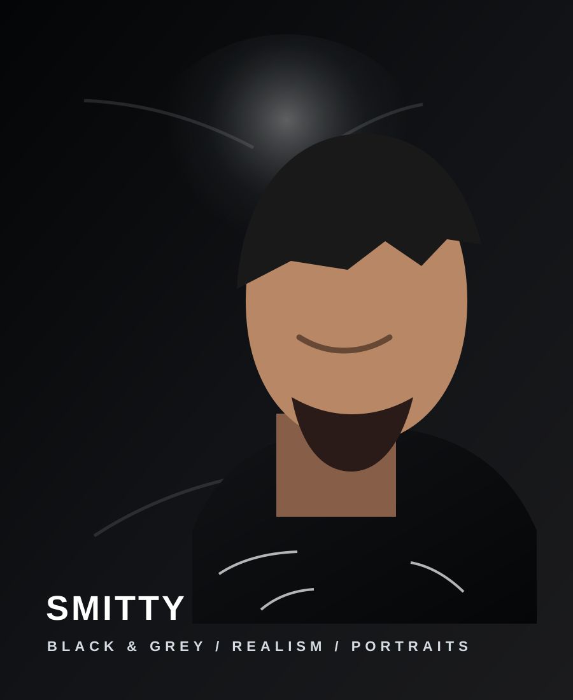
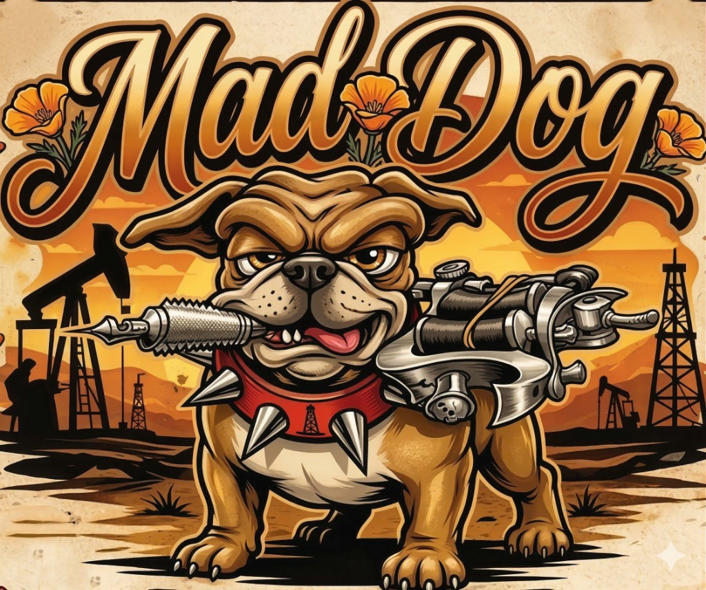
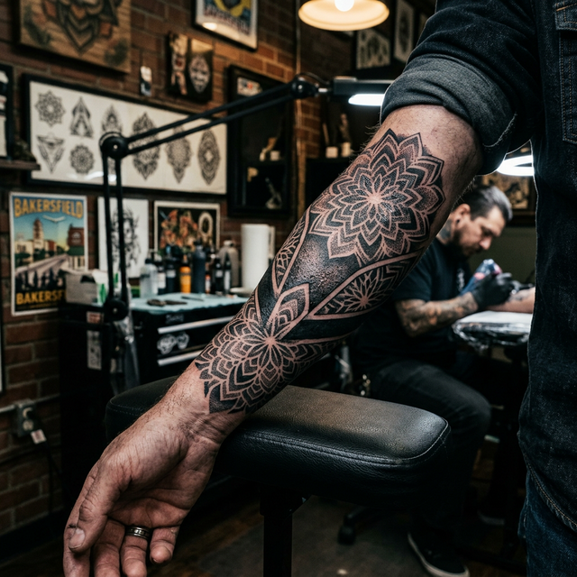

REALISM SPECIALIST
Smitty
@smittytattoo / Black & Grey Master
THE PHILOSOPHY
Smitty (@smittytattoo) is the shop's primary powerhouse for Black & Grey Realism. He specializes in translating high-resolution photography into permanent skin art with surgical precision. At Mad Dog, Smitty handles the projects that require extreme attention to light, shadow, and technical depth.
Realism
Black & Grey
Portraits
Technical Shading
PROJECT FIT
Human and animal portraits, hyper-realistic objects, and large-scale realism sleeves. Projects that benefit from high-contrast photography.
HARD NO'S
Simple line drawing flash or traditional American styles that don't utilize his technical depth.

